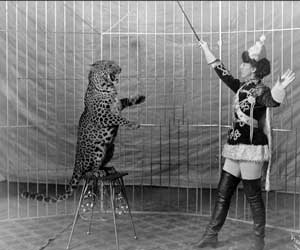

|
| Home | Talent | Cosmetic | Deformity | Abnormal | Ethnological |
Animal Training
Animal Training appeared in Freak Shows as a talent portion where a man or woman would show off their ability to tame a"wild" animal in front of the audience. Lions, Tigers, and Elephants (oh my!) were all animals that were regularly used to With the increase awareness of the poor treatment of these animals, and their endargerment rate, they slowly started to disappear from Freak Shows in the early 20th century. Much like other talents and oddifies, this also appears in modern day Circuses, the lion tammer being the most popular. |